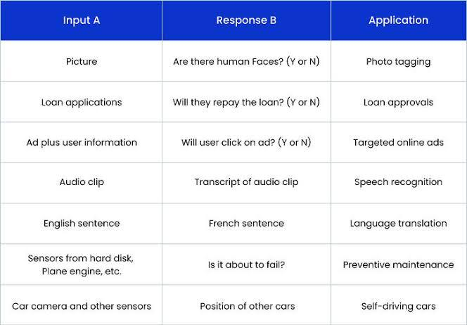
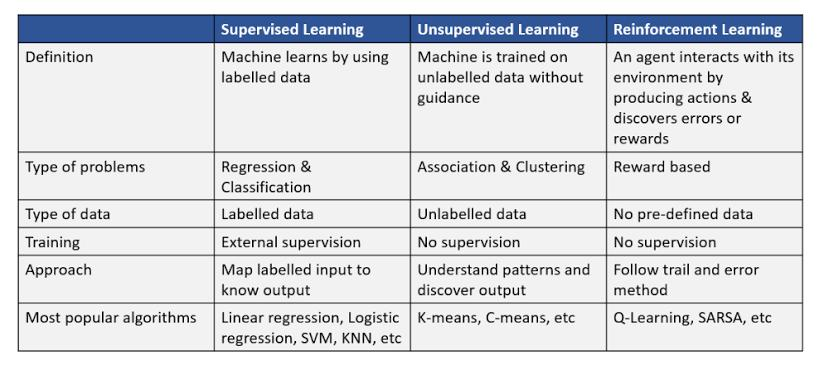

Lists :


In fact, she has put together a master list of these AI issues. Below I have listed some of these examples that are more (or less) related to health:
• Cancer. AI trained to classify skin lesions as potentially cancerous learns that lesions photographed next to a ruler are more likely to be malignant.
• Pneumonia: Deep learning model to detect pneumonia in chest x-rays works out which x-ray machine was used to take the picture; that, in turn, is predictive of whether the image contains signs of pneumonia, because certain x-ray machines (and hospital sites) are used for sicker patients
• Poisoning: Neural nets evolved to classify edible and poisonous mushrooms took advantage of the data being presented in alternating order, and didn’t actually learn any features of the input images.
• Exercise. In a soccer video game, the player is supposed to try to score a goal against the goalie, one-on-one. Instead, the player kicks it out of bounds. Someone from the other team has to throw the ball in (in this case the goalie), so now the player has a clear shot at the goal.
• Traffic fatalities (?). An AI agent playing a Road Runner game kills itself at the end of level 1 to avoid losing in level 2
While these examples are interesting and in some cases entertaining, they do demonstrate that applying AI in new situations–a type of external validity–must be done with great care.